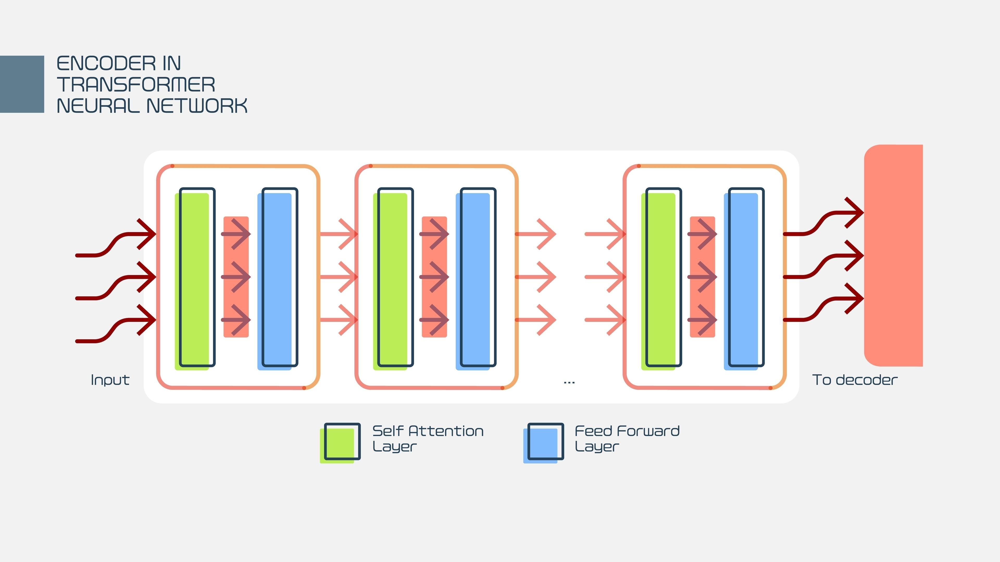

Research
Transformers¶
https://poloclub.github.io/transformer-explainer/
Process¶
- Embedding(Translation): text -> tokends and vectors
- Decoder 一本巨大的字典，字典里每一个词都对应一串数字（向量）
- Transformer Blocks (Thinking): model uses Self-Attention to look at all the words at once and figure out relationships (e.g., knowing that "bank" means a river bank, not a bank for money, based on context).
- Encoder 左顾右盼连接上下文
- Multi-Head Attention（多头注意力机制）——“开会讨论”
- Feed Forward（前馈神经网络）——“独立思考” ==>MLP (Multi-Layer Perceptron)
- Add & Norm（残差连接与归一化）

- Encoder 左顾右盼连接上下文
- Output Probabilities(The choice): a ranked list of words the model wants to say next (a Temperature slider can make the model choose riskier, more creative words)
- 温度低（冷）：它只敢选第一名，说话很严谨，但也无聊
- 温度高（热）：它敢选第二、第三名的词，说话会变更有创意，或者……开始胡说八道
Q： “Transformer 里的 MLP 是怎么运作的？”
💡 回答：“它作用在每一个词（Token）上。在 Attention 搞清楚词与词的关系后，MLP 单独处理每一个词，对它进行非线性的特征提取和转换。就像开完会后，每个人都要独立消化一下会议内容，把信息变成自己的知识。”
Syncode¶
Improving LLM Code Generation with Grammar Augmentation
We implement our approach in a tool, SynCode, that can easily work with any programming language using a user-provided context-free grammar (CFG). 保证语法Syntax正确
上下文无关文法提供了一种简单且数学上精确的机制，用于描述某些自然语言中短语如何由更小的块构建而成，从而自然地捕捉句子的“块结构”。
Syncode Whole Working Structure
- user prompt
- 用户说：“给我写个 Python 函数。”
- llm generation
- LLM 想输出下一个词。比如它想输出
def（定义函数），概率很高
- LLM 想输出下一个词。比如它想输出
- Incremental Parser
- 检查现状：看看前面已经写了啥？（比如刚写了个空行）。
- 预测未来（Accept Sequences）：根据语法书，告诉系统：“接下来必须是
def或者class或者import，其他的都不行！”
- DFA Mask Store Lookup
- 拿着刚才预测的“合法路径”，去那个预先算好的大表里一查。
- 表里立刻返回一个掩码（Mask）：“在字典里第 5、10、300 号单词是合法的，其他全封杀。”
- Logits Masking
- 把这个掩码盖在 LLM 的嘴上。LLM 原本想乱说的词都被堵回去了，只能乖乖吐出
def
- 把这个掩码盖在 LLM 的嘴上。LLM 原本想乱说的词都被堵回去了，只能乖乖吐出
- loop
- 生成了
def后，Parser 记下来，然后进入下一轮：“好了，现在写了def，下一个词必须是函数名……”
- 生成了
| (Term) | ** Definition** | What to say |
|---|---|---|
| CFG (Context-Free Grammar) | 语法规则书。定义了什么是“正确的代码”。比如“括号必须成对出现”。 | “就是编程语言的基本语法规则，Syncode 必须遵守的法律。” |
| Terminal (终结符) | 最小单位的词。比如 if, +, 123, print。不能再拆分了。 |
“就是代码里的具体单词或符号，是语法树的叶子” |
| Non-terminal (非终结符) | 概念/占位符。比如“表达式”、“语句”、“函数体”。它里面包含很多终结符。 | “代表一个语法结构，比如‘这里应该放一个函数定义’” |
| DFA (Deterministic Finite Automaton) | 迷宫地图。用来快速判断一个词符不符合规则的数学模型。 | “把复杂的语法规则转换成的状态机图，用来做快速匹配。” |
| Incremental Parser (增量解析器) | 记性好的监工 (inspector)。它不需要每次都重读全文，只读新加进来的词。 | “为了速度！它只解析新生成的 Token，不用从头跑，省时间。” |
| DFA Mask Store | 离线计算好的小抄。这是 Syncode 的核心创新。 | “这是预先计算（Pre-computed）好的查找表，把复杂的语法检查变成了简单的查表操作，所以 Syncode 推理速度很快。” |
| Remainder (残余部分) | 没写完的半个词。比如想写 print，现在只写了 pr，pr 就是 Remainder。 |
“就是未完成的 Token，需要留到下一步继续匹配，处理 Token 不对齐的问题。” |
GitHub - structuredllm/syncode: Efficient and general syntactical decoding for Large Language Models
Example:
- Define the grammar
- Load the Huggingface models
Basic mathematical expressions
Date
| Feature 特征 | Code 1 (Syncode class) | Code 2 (SyncodeLogitsProcessor) |
|---|---|---|
| Complexity 复杂 | Low (3-4 lines of setup) | Medium (Requires model/tokenizer setup)中等难度（需要设置模型/分词器） |
| Control 控制 | Limited to Syncode's arguments 参数 | Full control over Model & Generation对模型拥有完全控制权 |
| Input 输入 | Raw Strings | Tokenized Tensors (input_ids)分词张量 |
| Output 输出 | Decoded Strings 解码后的字符串 | Raw Token IDs (requires tokenizer.decode)原始令牌 ID |
| Use Case 用例 | Quick demos, simple apps, standalone usage快速演示、简易应用、独立使用 | integrating into existing AI pipelines, custom generation loops 集成到现有 AI 流程中，自定义生成循环 |
“SynCode 既然要查语法，会不会让推理速度变慢很多？”
💡 回答： “老师，这正是 SynCode 的精髓！它虽然要做语法检查，但它用了一个取巧的办法。 它把最耗时的计算（构建 DFA 地图）都提前在离线阶段做完了（Offline Pre-computation）。 在 AI 真正写代码的时候（Inference time），它只需要查表（Lookup），这非常快。 所以，它几乎不怎么拖慢速度，甚至因为避免了 AI 乱写废话，有时候反而更快！”
“什么是 Token Misalignment（Token 对齐问题）？这是个难点吗？”
💡 回答： “是个大难点。简单说就是 AI 的‘单词’（Tokens）和编程语言的‘单词’（Terminals）经常对不上号。 比如 Python 里的
return（带缩进的返回），在 AI 眼里可能是一个 Token，但在语法书里是‘缩进’+‘关键字’两个东西。 SynCode 通过特殊的算法解决了这个问题，让它们能完美匹配，保证不会因为切词切错了而误报错误。”
IterGen¶
IterGen: Iterative Structured LLM Generation
Users specify a context-free grammar in BNF for the target output language, guiding the LLM to adhere to the grammar's syntax.
In a code generation task, the IterGen program can move forward and backward by a statement or expression, instead of a specific number of LLM tokens and selectively resample fragments of generation with any semantic violation.
Shift-Reduce LR Parser
IterGen Algorithm
IterGen 非常适合在生成 SQL 时实现此类约束
Privacy Leakage
保证 semantic correct
based on Syncode, add 3 more modules:
- Symbol Position Map
- Decoding Trace
- KV Cache Management
Process
- user set goal
- forward
- view
- forward
- backtrack
- loop
| 专有名词 (Term) | 简单解释 (Definition) | 你的回答话术 (What to say) |
|---|---|---|
| Iterative Generation (迭代生成) | 走走停停的生成方式。 | “不是一次生成到底，而是分步骤生成，每一步都可以检查和修正。” |
| Backtracking (回溯) | 倒车/撤销。 | “当发现生成的代码有逻辑错误（比如表名不存在）时，让 AI 回退到错误发生前，重新尝试。” |
| Symbol-to-Position Mapping (符号位置映射) | 翻译官。把“语法概念”翻译成“Token 位置”。 | “解决了 Token Misalignment 问题。让我们能按‘语句’或‘变量’来回退，而不是按‘字符’回退。” |
| Forward() | 前进指令。 | “IterGen 的 API，让 AI 生成直到遇到下一个特定的语法符号（比如生成完一个完整的 SQL 语句）。” |
| Backward() | 后退指令。 | “IterGen 的 API，让 AI 回退指定数量的语法符号（比如回退到上一个 WHERE 条件）。” |
| Semantic Constraints (语义约束) | 逻辑规则。 | “SynCode 只能管语法（形式对不对），IterGen 可以管语义（内容对不对，比如变量有没有定义、隐私有没有泄露）。” |
太棒了！你的学习节奏保持得非常好。👏 既然你已经搞懂了 SynCode（那个严格的“语法保镖”），我们现在可以升级到 IterGen 了。 如果说 SynCode 是为了保证 AI “别说胡话”（语法正确），那么 IterGen 就是为了保证 AI “别说假话/错话”（语义正确）。
第一阶段：为什么要搞个 IterGen？（背景）
想象一下，你让 AI 写一句 SQL 查询代码：SELECT * FROM users WHERE age > 18
SynCode (语法保镖) 看了看：“嗯，拼写正确，括号匹配，语法完美！放行！”
现实问题：但是！如果你的数据库里根本就没有 users 这张表，或者没有 age 这个字段呢？
结果：代码虽然语法是对的，但逻辑是错的，运行不了（Semantically Incorrect）。或者更糟，AI 不小心把数据库里的真实用户邮箱泄露了出来（Privacy Leak）。 核心痛点： 目前的 AI 只能“一条道走到黑”（Left-to-right decoding）。一旦它写错了一个变量名，它没法像人类一样说：“哎呀写错了，我把这半句删了重写。”
IterGen 的作用： IterGen 就像给 AI 装了一个 “Ctrl+Z (撤销键)” 和 “方向盘”。 它允许我们在生成过程中，暂停一下，检查刚才写的内容对不对（比如查查数据库里有没有这张表）。如果不对，就倒车（Backtrack） 回去重写那一部分。
Q1: "IterGen 和 SynCode 有什么区别？"
你的回答： “SynCode 是保镖，只管语法（Syntax），保证代码不报错；IterGen 是编辑，管语义（Semantics），保证代码逻辑是对的。而且 IterGen 最大的特点是支持回溯（Backtracking），写错了能改。”
Q2: "你提到了 Privacy Leak（隐私泄露），IterGen 怎么防止隐私泄露？"
你的回答： “我们在生成过程中用 view() 函数实时检查。如果 AI 生成了一个像邮箱地址的东西，IterGen 会立刻拿去和敏感数据库比对。如果发现是真实用户的邮箱，就立刻调用 backward() 回退，逼着 AI 重写一个假的邮箱。”
Q3: "它怎么知道回退到哪里？"
你的回答： 靠 Symbol Position Map。它动态记录了每个语法符号（比如‘Table Name’）对应的是哪一段 Token。所以我们可以精准地切掉错误的那一段。”
评论区~
有用的话请给我个赞和 star =>